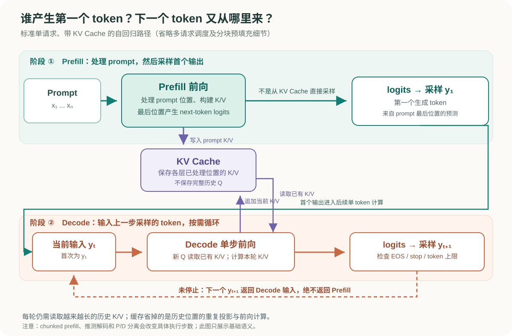

第 01 章 · 推理基础与系统认知
LLM 推理基础：一次请求如何变成一串 token？
在理解 vLLM 之前，先看清楚大语言模型如何逐步生成文本、为什么要保存 KV Cache，以及推理服务究竟在和哪一种资源瓶颈较劲。
这一章要回答一个具体问题：当你发送“解释一下光合作用”时，模型如何把输入变成一段回答？关键不只是模型做了一次前向计算，而是它反复执行“计算下一个 token—追加到上下文—再计算下一个 token”的过程。理解这个循环，才能理解后面的缓存、批处理和调度优化。
读完这一章，你应该能够
- 用自己的话解释自回归生成，以及 token 不等于一个完整汉字或单词。
- 区分 Prefill 与 Decode 的工作内容和计算特征。
- 解释 KV Cache 为什么能避免重复计算历史 token 的 K/V。
- 根据模型结构和上下文长度估算单请求 KV Cache 的理论大小。

1.1 自回归生成：模型一次只决定下一个 token
大语言模型通常以 token 序列作为输入。token 是 tokenizer 切分出来的单位，可能是一个汉字、一个词的一部分、标点，也可能是多个字符的组合，因此不能简单地把 token 当成“一个字”或“一个单词”。
模型根据已有上下文计算下一个 token 的概率分布，再通过贪心选择或采样策略选出一个 token。把这个 token 接到上下文末尾，模型就可以继续预测下一个。
输入：请解释光合作用
第 1 轮：上下文 → 预测 token y₁
第 2 轮：上下文 + y₁ → 预测 token y₂
第 3 轮：上下文 + y₁ + y₂ → 预测 token y₃
...
停止：遇到 EOS、停止条件，或达到 max_tokens这里有两个容易混淆的概念：模型内部处理的是 token ID，而人看到的是解码后的文本；模型每轮输出的是一个 token（或在某些解码策略中是一组候选），并不是一次性写出完整句子。
先建立正确直觉：生成过程是一个循环。优化推理速度，既要关注单轮计算，也要关注历史状态如何保存、多个请求如何共享 GPU，以及每一轮应该处理哪些请求。
1.2 Prefill 与 Decode：一次处理输入，随后逐步生成
推理服务通常把一次生成过程分成两个逻辑阶段。它们不是两种不同的模型，而是同一个 Transformer 在不同输入形态下执行的工作。注意：这里说的是教学上的逻辑阶段；vLLM V1 通过统一 token budget 调度，Prefill 可以按块推进，并不要求一轮调度只能包含一种阶段。
| 维度 | Prefill（预填充） | Decode（解码） |
|---|---|---|
| 输入 | 用户提供的整段 Prompt | 当前新生成的 token |
| 主要工作 | 处理 Prompt 中的 token，并建立各层 KV Cache | 计算新 token 的表示，并对历史 K/V 做注意力读取 |
| 并行特征 | 同一层可以并行处理多个 Prompt 位置（受因果 mask 约束） | 生成步骤之间存在依赖，通常逐步推进 |
| 常见瓶颈 | 较长 Prompt 时，计算量和注意力计算可能成为瓶颈 | 小批量场景常受模型权重与 KV 读取的显存带宽影响 |
| 关键指标 | Time To First Token（TTFT） | Inter-Token Latency（ITL）/ Time Per Output Token（TPOT） |
可以把 Prefill 想成“读完题目并做第一次计算”：模型处理 Prompt 的所有位置，为每一层建立后续要复用的 K/V。Decode 则像“接着往下写”：新 token 依赖已经生成的上下文，但不需要重新计算历史 token 的 K/V 投影。
交互观察：切换到不同阶段
选择一个阶段，观察模型此时处理哪些 token、缓存发生什么变化。
处理对象：Prompt 中的所有 token 位置。
缓存变化：每层计算并写入 Prompt 对应的 Key 和 Value，供后续生成读取。最后一个 Prompt 位置的输出 logits 用来采样首个生成 token y₁（假设未触发特殊路径）。
处理对象：以 Prefill 已采样的 y₁ 作为当前输入，在 Decode 中计算并预测 y₂；这不是重新处理整段 Prompt。
缓存变化：新 token 的 K/V 被追加；它的 Query 可以读取 Prompt 已缓存的 K/V。
处理对象：以刚采样得到的 y₂ 为当前输入，下一轮 Decode 预测 y₃。
缓存变化：新 Query 读取 Prompt 与第一个输出 token 的 K/V，再把自己的 K/V 追加到缓存。
常见误解：“每生成一个 token，都要把整个历史序列重新跑一遍 Transformer。”这描述的是没有有效复用历史 K/V 的朴素做法，不是启用 KV Cache 后的标准 Decode 路径。Decode 仍要对不断增长的上下文做注意力读取，但历史 token 的 K/V 投影不必每轮重算。
1.3 KV Cache 保存什么，又没有保存什么？
在 Transformer 的自注意力层中，输入隐藏状态会经过线性投影，得到 Query（Q）、Key（K）和 Value（V）。对后续 token 来说，历史位置的 K 和 V 会再次参与注意力计算，因此可以把它们缓存下来。
简化地看，生成第 t 个新 token 时：
Q_new = 当前 token 的 Query
K_all = [历史缓存的 K] + [当前 token 的 K]
V_all = [历史缓存的 V] + [当前 token 的 V]
Attention(Q_new, K_all, V_all) → 当前 token 的输出KV Cache 不是“把整个模型的中间结果都保存起来”，而是保存注意力计算需要复用的 Key / Value 张量。每个 Transformer 层通常都有自己的 K/V 缓存；模型结构、注意力类型、并行策略和缓存 dtype 都会影响实际内存布局。
因此，KV Cache 带来的是计算与显存之间的交换：减少历史 K/V 的重复投影计算，但需要随着上下文增长持续保存这些张量。它也是为什么一个模型权重能放进 GPU，并不代表就能承载很多长上下文并发请求。
1.4 估算 KV Cache 显存：从每个 token 开始
对一个使用标准注意力 K/V 缓存的模型，可以先用下面的理论公式做粗略估算：
其中：2 表示 K 和 V 两份张量；L 是层数；HKV 是每层 KV heads 数；Dhead 是每个 head 的维度；T 是缓存 token 数；B 是每个元素占用的字节数。若有多个并发请求，还要按每个请求的实际缓存长度求和。
例子：一个 Llama 3 8B 结构的理论估算
假设模型有 32 层、每层 8 个 KV heads、head dimension 为 128，缓存使用 FP16（每个元素 2 bytes）：
每 token 字节数
= 2 × 32 × 8 × 128 × 2
= 131,072 bytes
= 128 KiB / token
单个 8,192-token 序列
= 128 KiB × 8,192
= 1 GiB（理论值）这里的数字是按给定结构和 dtype 推导的教学估算，不是 vLLM 启动时的显存承诺。实际可用 KV Cache 容量还受到权重、激活、CUDA Graph、缓存对齐、并行切分、模型注意力结构和其他 GPU 进程影响。
为什么 GQA 重要？如果模型使用 Grouped-Query Attention，KV heads 可以少于 Query heads，因此每 token 需要保存的 K/V 元素会更少。估算时必须使用 KV heads，而不是盲目把 Query heads 数代入公式。
1.5 为什么 Decode 常常受显存带宽限制？
推理的瓶颈并不是永远固定的。长 Prompt 的 Prefill 可能需要大量矩阵计算；Decode 则每轮只产生少量新 token，却要读取模型权重和不断增长的 KV Cache。特别是在批量较小的情况下，GPU 可能花费较多时间搬运数据，而不是执行足够多的算术运算。
增加并发请求有机会让一次权重读取服务更多 token，从而提高硬件利用率；但并发增加也会占用更多 KV Cache，带来排队、抢占和延迟变化。于是推理引擎要同时考虑计算、显存容量、显存带宽和服务目标。
这就是 vLLM 后续章节的主线：PagedAttention 改善 KV Cache 的组织与共享；Continuous Batching 让请求可以在迭代边界动态进入和退出；Scheduler 则在有限的 token budget 和缓存容量下安排下一轮工作。
1.6 如何衡量一个推理服务？
| 指标 | 含义 | 使用时要注意 |
|---|---|---|
| TTFT | 请求进入后到第一个输出 token 的时间 | 受排队和 Prefill 影响明显 |
| ITL | 相邻输出 token 之间的时间 | 关注分布和尾延迟，不只看平均值 |
| TPOT | 平均每个输出 token 的耗时 | 具体统计口径要看 benchmark 工具 |
| E2E latency | 从请求发出到完整响应结束的时间 | 与输出长度和服务排队共同相关 |
| Throughput | 单位时间处理的请求数或 token 数 | 必须说明是 input、output 还是总 token |
| Goodput | 满足延迟等服务目标的有效吞吐 | 比单独追求峰值吞吐更贴近 SLA |
没有适用于所有业务的“TTFT 必须低于某个毫秒数”或“GPU 利用率必须达到某个百分比”。交互式问答、离线批处理和长上下文分析的目标不同。基准测试必须把工作负载、并发、模型、硬件和延迟指标一起报告。
本章自检：你能解释这三件事吗？
- 为什么 Decode 不能像 Prefill 一样把未来 token 一次性并行算出来？
- 启用 KV Cache 后，为什么仍然需要读取越来越长的历史 K/V？
- 为什么估算 KV Cache 时，GQA 模型应该使用 KV heads 数量？
如果这三个问题都能回答，就已经具备理解 vLLM 的基础。下一章会从系统视角解释 vLLM 的定位：它如何围绕内存管理、请求调度和 GPU 执行组织一个高吞吐推理服务。
参考资料
- Vaswani et al., Attention Is All You Need，Transformer 注意力机制的原始论文。
- vLLM, Architecture Overview，当前架构中 Engine Core、Scheduler 与 GPU Workers 的职责。
- vLLM, Optimization and Tuning，Prefill / Decode 调度与缓存压力相关说明。
公式示例按本文列出的模型结构和 FP16 dtype 推导；不等同于某一具体部署环境的实测显存。